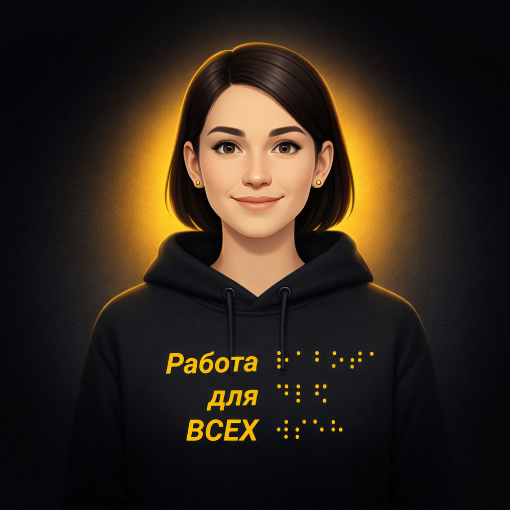

Работа для всех
⠗⠁⠃⠕⠞⠁ ⠙⠇⠫ ⠅⠁⠚⠙⠕⠛⠕
Персональная консультация

Консультация Ассистента Веры
Как подготовиться к первому рабочему дню
Индивидуальные рекомендации по итогам разговора
Первый рабочий день станет спокойнее, если заранее уточнить маршрут, необходимые документы, доступность рабочего места и контакт сотрудника, который встретит вас на месте.
Суть обращения
Вы рассказали, что получили предложение о работе и хотите заранее разобраться, как будет устроен первый день. Больше всего вас волнуют дорога до офиса, знакомство с командой и возможность пользоваться привычными средствами доступности.
Это нормальные вопросы. Их лучше задать работодателю до выхода, чтобы в первый день сосредоточиться на знакомстве с задачами и людьми.
Что важно учесть
Организация первого дня
Попросите работодателя сообщить время прибытия, имя встречающего сотрудника и способ связаться с ним. Уточните, нужно ли брать паспорт, трудовые документы или реквизиты банковского счёта.
Доступность рабочего места
Заранее перечислите только те условия, которые действительно понадобятся: доступ без ступеней, помощь при ориентировании, совместимость рабочего компьютера со скринридером или другое разумное приспособление.
Спокойный темп знакомства
Не требуется запомнить всё сразу. Запишите имена ключевых коллег, основные каналы связи и первые задачи. Остальные детали можно уточнить позже.
Рекомендуемый план действий
-
Свяжитесь с работодателем
Напишите или позвоните контактному лицу за один–два рабочих дня до выхода и уточните организационные детали.
-
Подготовьте документы и маршрут
Сложите документы в одну папку, проверьте дорогу и предусмотрите небольшой запас времени.
-
Сформулируйте потребности
Кратко запишите, какие условия доступности понадобятся вам для выполнения рабочих задач.
-
Зафиксируйте итоги первого дня
После работы запишите полученные доступы, имена коллег, первые задачи и вопросы, которые ещё нужно обсудить.
Пример сообщения работодателю
«Здравствуйте! Подтверждаю, что буду в офисе в понедельник к 9:00. Подскажите, пожалуйста, кто сможет встретить меня у входа и какие документы нужно взять с собой. Для работы мне также понадобится возможность использовать скринридер. С кем можно заранее обсудить его установку и доступ к рабочим системам?»
Полезные материалы
- Платформа «Работа для всех» Вакансии, материалы и сервисы для соискателей.
- Контакт работодателя Имя сотрудника, телефон или адрес электронной почты.
Приложение
Основные фрагменты разговора
Диалог приведён для контекста. Формулировки могли быть сокращены, при этом смысл вопросов и ответов сохранён.
-
Пользователь
Я выхожу на новую работу в понедельник. Это мой первый опыт в большом офисе, поэтому переживаю, что не смогу быстро сориентироваться.
-
Ассистент Вера
Давайте подготовимся заранее. Вы уже знаете, кто встретит вас у входа и какие документы нужно принести?
-
Пользователь
Пока нет. Ещё мне нужно уточнить, можно ли установить скринридер на рабочий компьютер.
-
Ассистент Вера
Тогда лучше написать контактному лицу до выхода. Я помогу составить короткое сообщение и список вопросов.